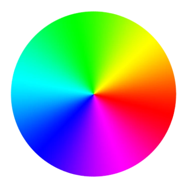
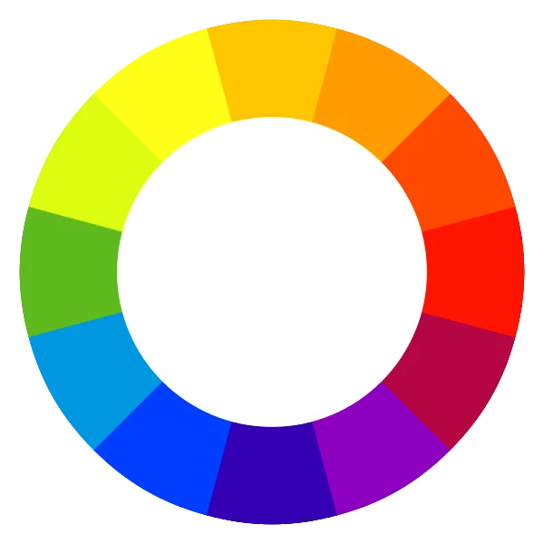

Anotações da aula de Círculo Cromático
O Cículo cromático serve para harmonizar as cores.
As cores primarias são a base do cículo cromático (Vermelho, azul, amarela)
- Usamos de 3 á 5 cores na nossa paleta de cores
- Quando o cliente tem uma logo, usamos a cor peimwrioa dela para colocar no site
Círculo Cromático


Vídeo da aula
degrade=saturação e luminosidase